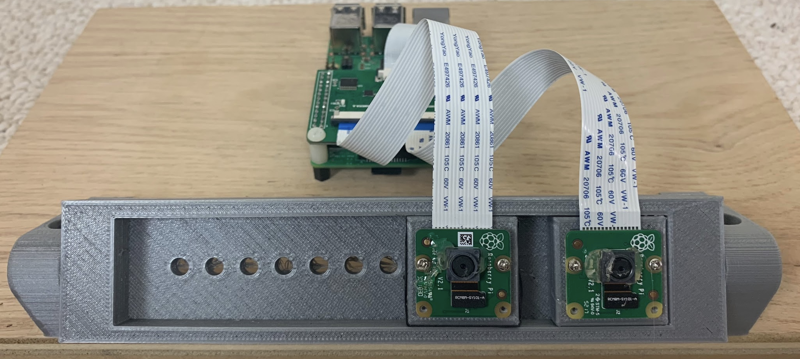
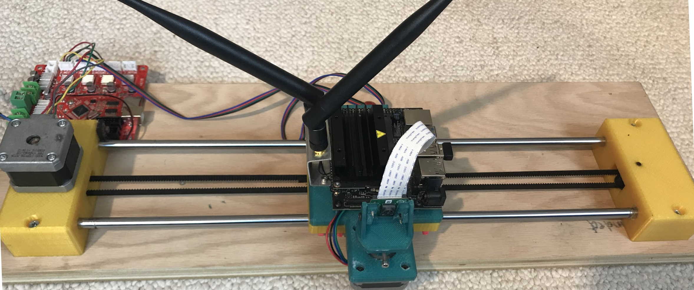
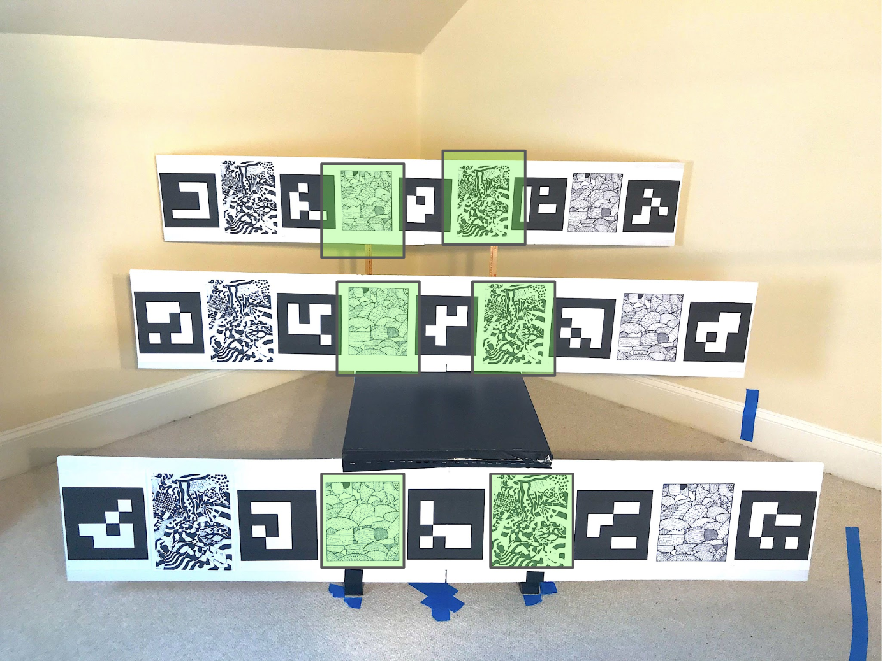
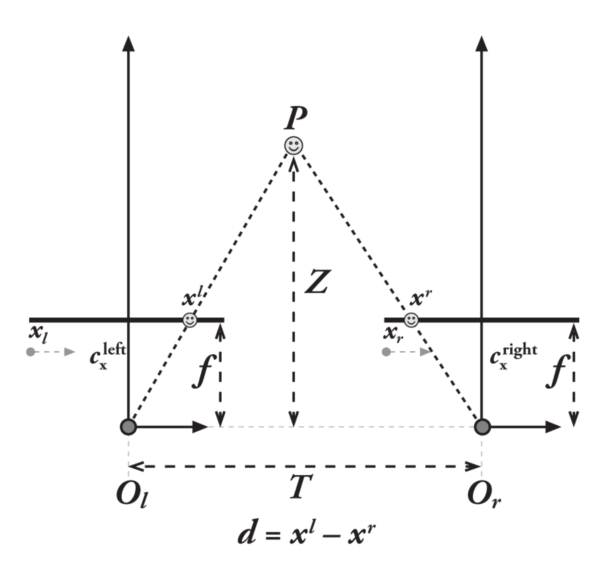
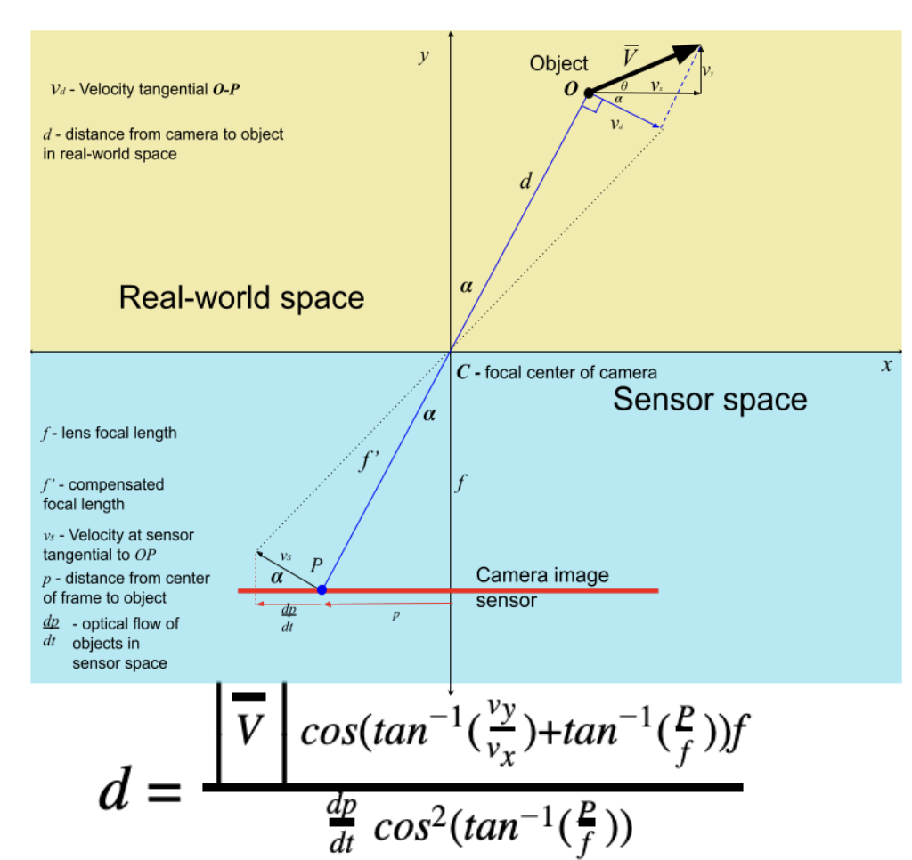

We based our vision systems on our own two eyes. But is that really how we see?
The inability of robots to accurately map 3D environments is one of the biggest hurdles to greater adoption of autonomous robots in our chaotic, unstructured environments. The most common 3D depth mapping systems currently used are stereo vision systems and LiDAR. Stereo systems, which require 2 cameras, are computationally costly and are prone to errors, while LiDAR systems are very expensive, have slow update cycles, and are cumbersome. I had a hypothesis that we see primarily through movement of our head, in a process called optical flow, rather than with a stereo system design. The purpose of my project was to explore the feasibility of a depth mapping system for robots based on dense optical flow as implemented in most GPU chips by extending the Gunnar Farneback algorithm. Optical flow algorithms measure the speed of movement of objects in sensor space given a stationary camera. I set out to determine whether this technology can be applied to measuring the distance to stationary objects in real-world space if the camera’s velocity in real-world coordinates is known, as is the case in most ground-based robots.
Design Requirements
To perform an analysis, I needed to create two vision systems and make an environment to test them on.
- The control setup needed to:
- Be a stereo vision system, with two cameras
- Use the same cameras as my experimental setup
- Be precise enough on the camera spacing to be as accurate as possible
- The experimental setup needed to:
- Use a single camera
- Smoothly and accurately move from left to right and rotate
- Record high-quality footage
The testing setup
I created my own stereo and optical flow setup for this experiment
Control (Stereo) Setup

The stereo setup was easy - two cameras, a fixed distance apart, controlled by a Raspberry Pi and a simple 3D printed stand for the cameras.
Experimental (Optical Flow) Setup

The experimental setup was not so easy. I needed to use a spare 3D printer control board to control 2 stepper motors - one for movement and one for rotation. I also used a more powerful controller, the Jetson Nano, in order to capture uncompressed video.
Testing Setup

I set up my targets (images with many lines to track) between aruco markers, which are easy for a computer to identify and find the location of. Each setup is then tasked with finding the distance to each target over multiple trials.Underlying theory
The stereo system, because the pictures are always a set distance apart at a single point in time, is simplistic in calculation. The distance shift in pixels between two cameras is multiplied by a constant determined by the focal length and distance between cameras

Because optical flow wasn't meant to be done with a moving camera (the scene should be the one moving) I had to come up my own distance calculations as shwon in my diagram below. This systems works with linear (sideways, but easily adaptable for up and down too) and rotational motion but as of now is unable to handle forward backwards movement to a target

Results

Findings:
For the special case of linear camera motion, the experiment confirms that Optical Flow algorithms can achieve comparable accuracies to traditional Stereo vision systems with much lower variance in measurements. While the overall accuracy of Stereo vision was greater at the very close distances, Optical Flow was more accurate at the longer distances. This is probably due to the Optical Flow algorithm using multiple images from the video stream to update measurements over time. This points to some interesting possibilities for robotic vision in the future. Dense optical flow is particularly interesting due to its ability to map a full scene and refine its accuracy over time.
Learnings
- How to use OpenCV and vision systems in general
- Data streams (in video gathering)
- Deep data analysis with Pandas and MatPlotLib
- How to write gcode commands
- How to use trig in 3 dimentions to pull answers form complex systems